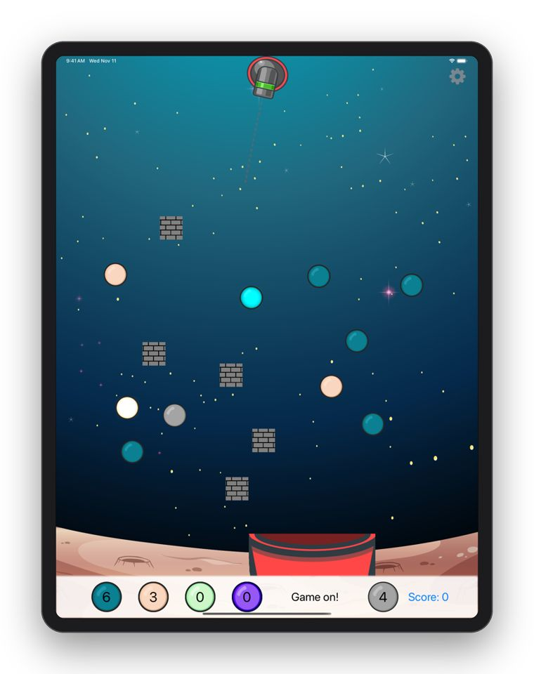
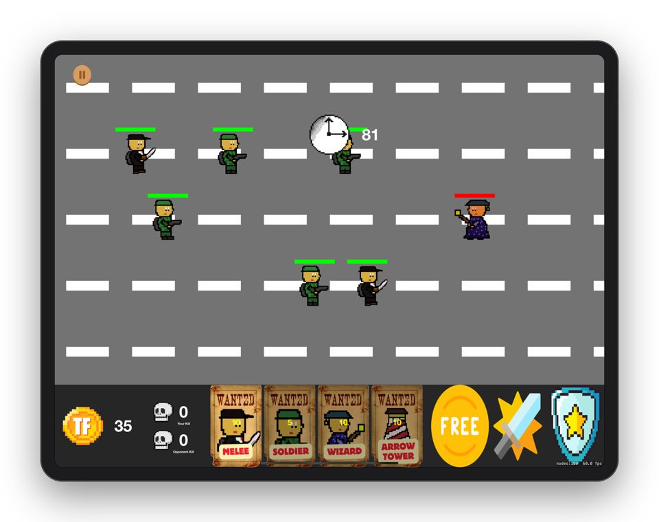
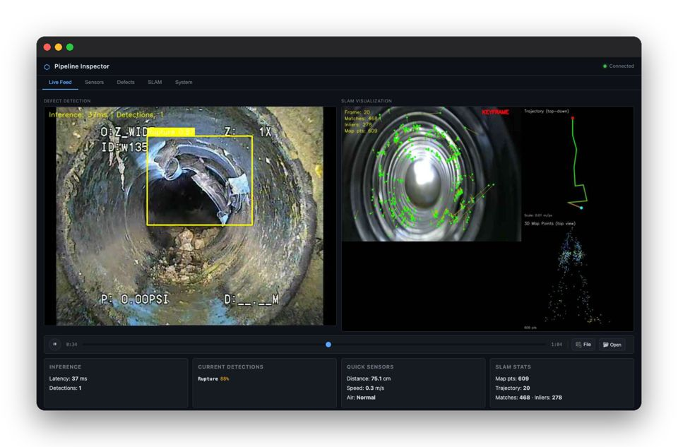
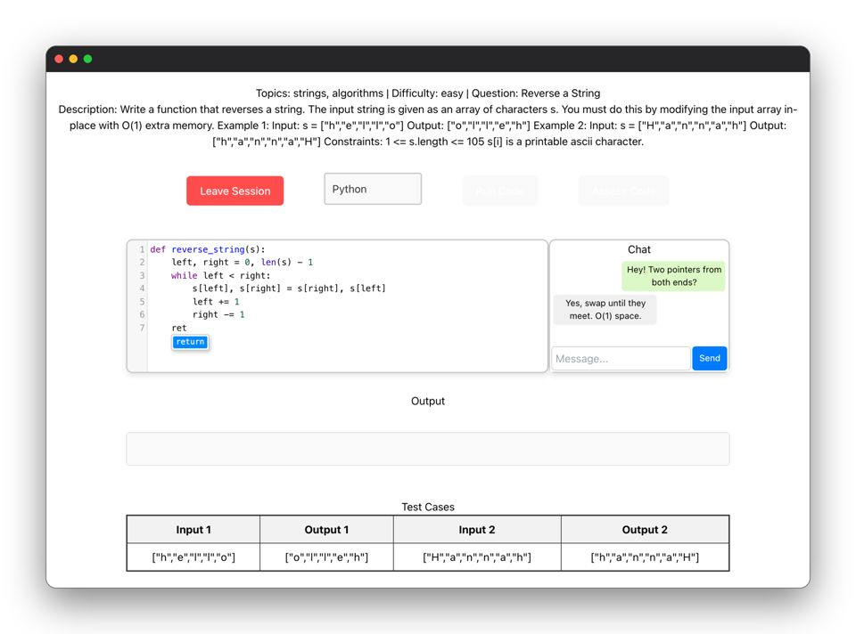
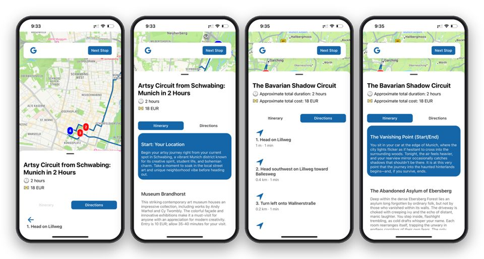

Rubesh Suresh
iOS engineer · Swift, SwiftUI, UIKit, SpriteKit · Singapore
iOS apps

SpacePeggle
A native iPad physics game built from scratch: a protocol-oriented 2D physics engine, a game engine and a gesture-driven level editor.

TowerForge
A real-time multiplayer iPad tower-defence game on an entity-component system, with local and Firebase cloud persistence and CI.
Experience
Built Makaber, a Python and FastAPI integration that syncs a CRM with a door-access system over REST APIs and webhooks, and machine-permission automation.
Smart Digital Junction: edge-AI traffic monitoring on Raspberry Pi 5 and Hailo-8, and an LLM text-to-SQL prototype.
Digital Wayang Kulit: an interactive 3D shadow puppet in the browser, with a research paper.
Selected projects

AddamNet
Autonomous defect detection and mapping in pipeline networks: YOLOv8 on a Raspberry Pi, visual SLAM and a live dashboard.

PeerPrep
A collaborative coding-interview platform: microservices, real-time matching and a shared editor.

wanderminds
An AI travel companion: it plans a short trip from where you stand, draws the route and narrates each stop.
- Artificial Consciousness · Bash chatbots that rewrite their own code at runtime; Tembusu College Best Work Prize
- ROS 2 navigation · A* planner and pure-pursuit controller in C++
- UniCa$h · a finance tracker in Java and JavaFX (team project)
- Discrete Event Simulator · purely immutable Java, with hosted Javadocs
- More on GitHub · hackathons, robotics and hardware
Skills
Education
B.Eng (Hons) Mechanical Engineering, Second Major in Computer Science. Dissertation: AddamNet, grade A.
NUS Overseas Colleges programme: entrepreneurship courses and a software engineering role in Munich.